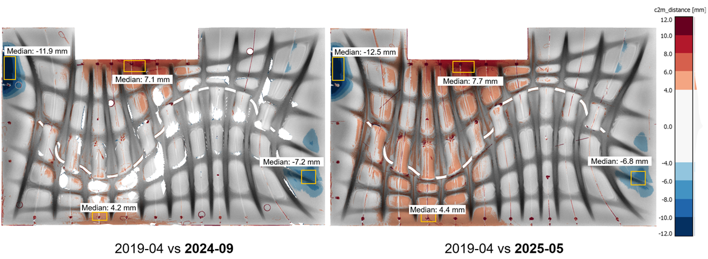
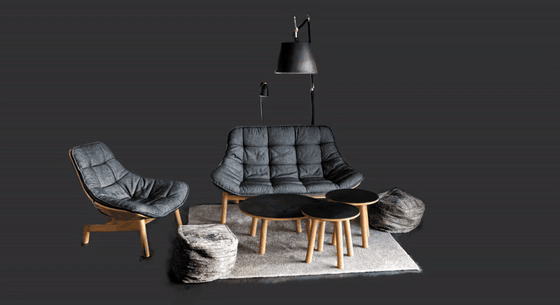
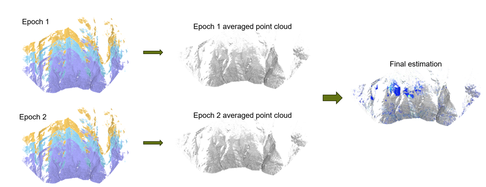
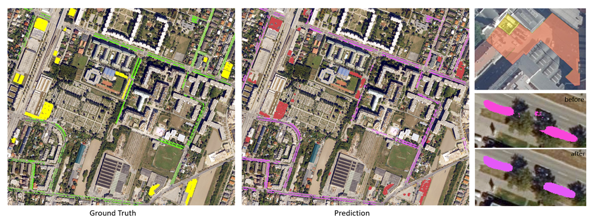

As a Product Engineer with an MSc in Geomatics from ETH Zürich, I work at the intersection of customers, product, and engineering. Currently working on Amberg Rail, I focus on translating user wishes into clear specifications, prototyping to validate feasibility, and shaping features that drive tangible business value.
My technical foundation runs deep: from laser scanning and 3D reconstruction to computer vision and VR. However, my true passion lies in the potential of point clouds and digital twins. My ambition is to take on growing product responsibility, from owning features today toward owning products, and to lead the development of 3D visualization and geospatial products that truly meet real user needs.


The DFAB HOUSE is a landmark of digital fabrication built in 2018/19 but never monitored long-term. Within the ConcreteGuard project, I turned six years of concrete structural change into a millimeter-accurate digital twin and an interactive VR product that makes point-cloud analysis explorable for engineers, researchers, and visitors alike.

Climate change is accelerating landslides and rock falls in the Alps. In this thesis, I quantified multi-year surface deformation below the Breithorn and Gugla mountains (Mattertal, Valais) from high-resolution terrestrial laser scanner (TLS) point clouds, and validated the results against permanent GNSS stations, benchmarking which point-cloud change-detection methods are accurate and reliable enough for operational monitoring solutions.

Complete, up-to-date parking-space data is scarce, yet vital for traffic management and urban planning. Working with Austria-wide 20 cm orthophotos (BEV), I trained semantic segmentation models to map on-street and off-street parking across Vienna, turning raw aerial imagery into a geospatial data product that answers a concrete planning need.